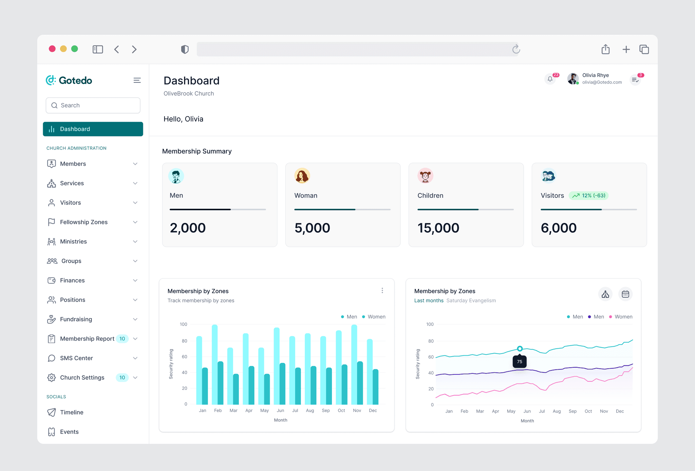
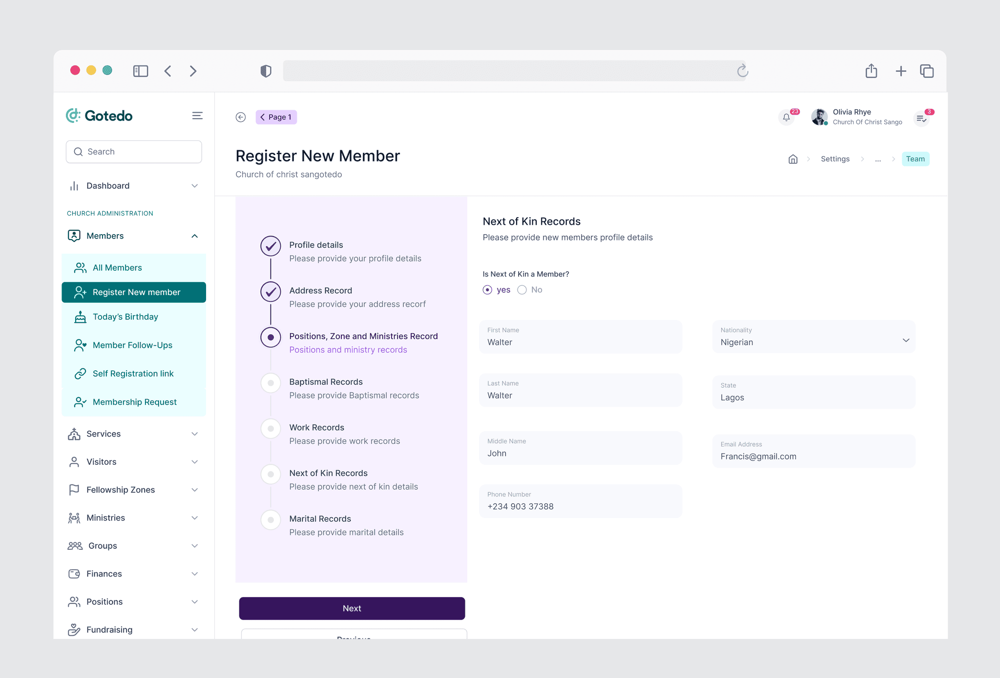
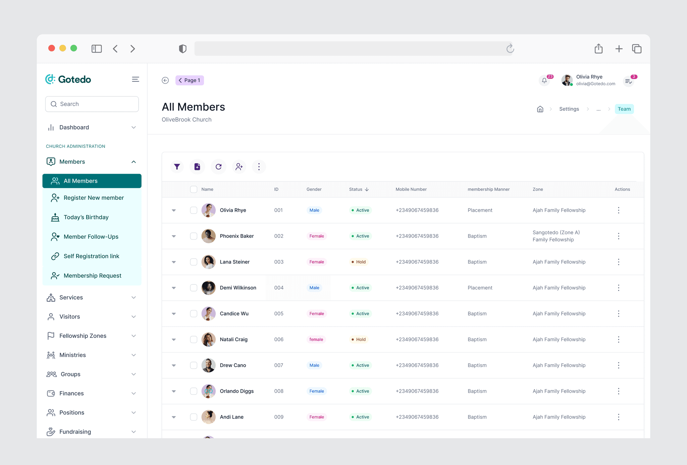
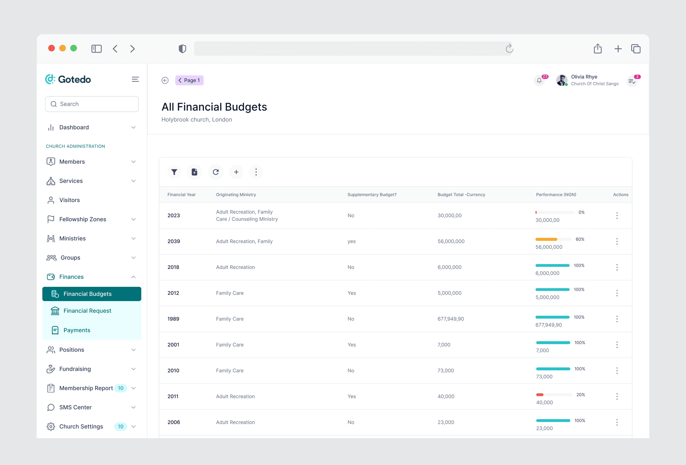
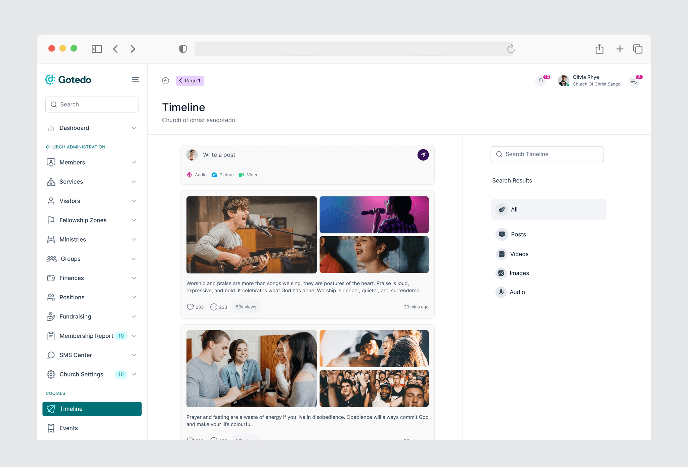
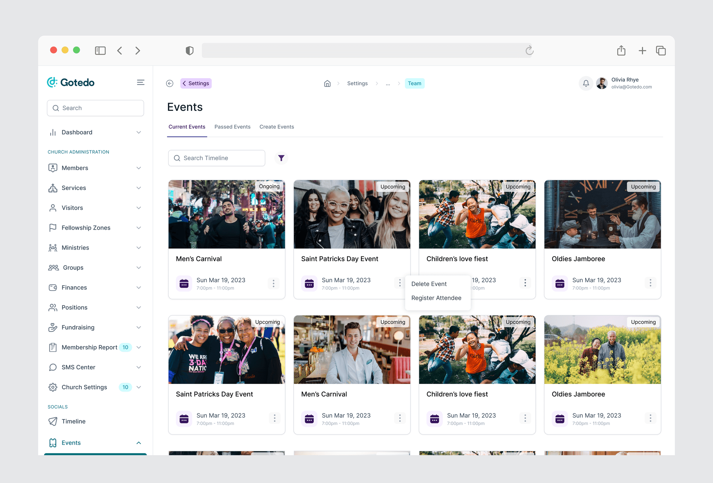

The Challenge
The main problem was not that churches lacked tools.
The problem was that their tools did not work together.
Member records lived in spreadsheets. Attendance was tracked manually. Communication happened on WhatsApp. Event registration was handled through forms, while financial records were managed separately.
This created three major issues: repeated admin work, inconsistent member data, and poor visibility into growth and engagement.
For leaders, it was difficult to know what was happening across the church. For admins and volunteers, simple tasks became slower than they needed to be.
The challenge was to design one platform that could bring these workflows together, while still feeling simple enough for non-technical church teams to use.
How can we help church teams manage people, operations, and engagement from one place without making the system feel complex?
The Solution
I designed Gotedo as a centralized operating system for church administration and engagement.
Instead of separating membership, attendance, events, finance, and communication into different tools, the platform connected them into one structured workflow built around how church teams already operate.
Executive Dashboard
The dashboard was designed to help leaders quickly understand the health and activity of the organization.
Key metrics such as total members, visitors, children, gender distribution, and membership growth across zones were surfaced in one place, reducing the need to gather reports from multiple departments or spreadsheets.
The goal was not just to display data, but to help leadership identify areas that needed attention faster.

Simplified Member Registration
Churches often collect large amounts of member information, including personal details, family information, employment records, and church-related history.
Instead of presenting this as one overwhelming form, I designed a multi-step registration wizard that broke the process into smaller sections.
This reduced cognitive load, improved data accuracy, and made registration easier for both admins and volunteers to complete.

Logic-Driven Member Management
I introduced member status labels such as Active, Weak, and Hold to help church teams better understand engagement patterns.
This transformed the member database from a static record system into a more actionable CRM, allowing admins to identify members who required follow-up or profiles with incomplete information.
The system helped teams respond earlier instead of waiting until members became completely inactive.


Community & Event Engagement
Beyond administration, the platform also included an event and social engagement layer.
Church teams could create events, manage registrations, post updates, and keep members informed without relying on separate communication tools.
By connecting engagement directly to the member database, the platform created a more unified community experience.


4. The Impact
The MVP helped consolidate multiple disconnected workflows into one centralized platform for church operations.
Gotedo reduced dependence on spreadsheets, forms, paper records, and separate communication tools by bringing member management, attendance, finance, events, and engagement into a single system.
The platform improved operational visibility for leadership teams, simplified administrative workflows for volunteers, and created a stronger foundation for scalable community management.
Key results:
Replaced 4+ disconnected administrative tools
Reduced admin setup time by approximately 40%
Improved member data accuracy through structured onboarding
Helped teams identify weak engagement earlier
Simplified event and attendance management workflows